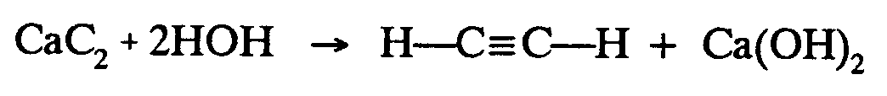
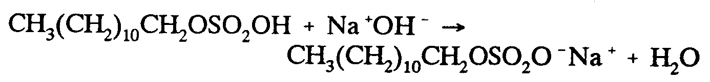
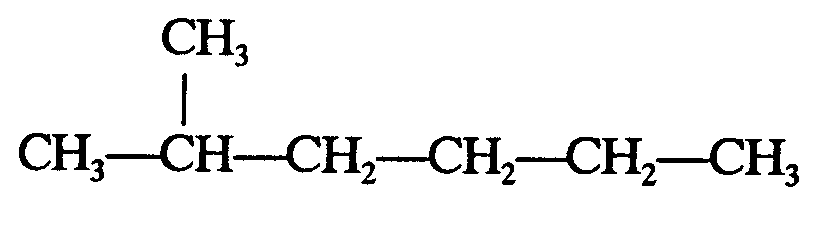
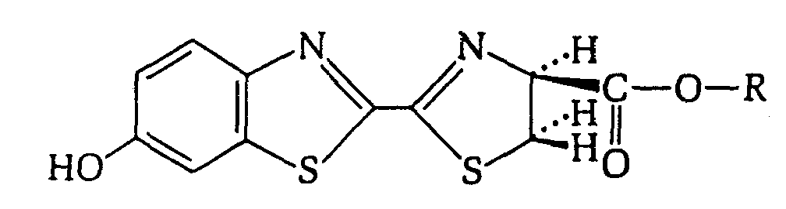
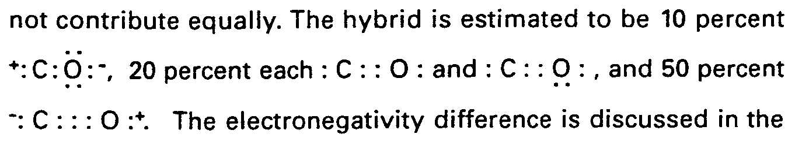
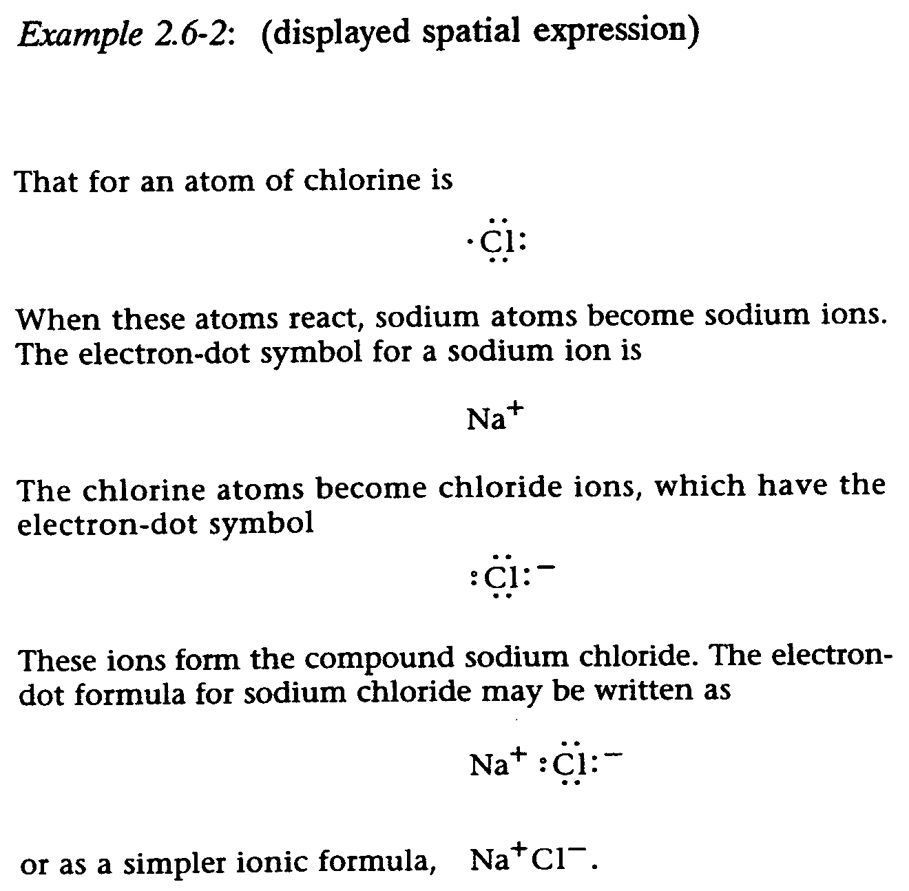
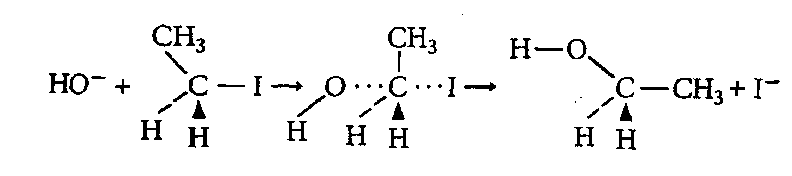
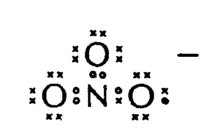

|
©hoose LANGUAGE bArd fr©Ide
2 GENERAL FORMAT
2.1 Runover Sites. Runover sites must be selected carefully to minimize the number of runovers and to keep related material intact. Do not divide any mathematical expression if it can be contained on one line. Avoid running over within material between bonds, ring structures, superscripts or subscripts, and modifications.
2.2 Preference List for Runovers. When a chemical expression cannot be kept on one braille line and must be divided between lines, the division must be made giving priority to the following items in descending order:
(1) Before a symbol of comparison
(2) Before a symbol of operation
(3) Before an opening fraction indicator
(4) Before a chemical bond
(5) Before a fraction line
(6) Before the base-line indicator*
(7) Before a change-of-level indicator or within a superscript or sub- script before one of the symbols listed above
(8) After a comma which occurs between items in an enclosed list
(9) Between factors which are enclosed within grouping symbols
(10) After a termination indicator.
Fractions, parenthetical expressions, and chemical formulas should be completed on one braille line if possible. If the numerator or denominator of a fraction must be run over, a division must occur also at the fraction line. If a chemical compound in a mathematical link must be run over, a division must be made also at a sign of operation. (See Example 2.5-2.)
*The baseline indicator assumes the priority position of the symbol which follows it. (See Examples 6-8 and 7.1-2.)
2.3 Linked Expressions. If a displayed expression is too long to fit on one line and contains "links" (as defined in §189 of the Nemeth Code), the special margin requirements for linked expressions of the Nemeth Code (§190c, §191a(iv) and b(v)) apply regardless of the print format. Thus:
(1) Indent two cells from the anchor margin when the runover begins with a comparison symbol.
(2) When the runover begins with some symbol other than a comparison symbol, indent four cells to the right of the anchor margin. (See Example 2.5-2 below.)
(3) When remarks, conditions, or explanations appear with the formula, start them on a new line and block this material six cells to the right of the anchor margin.
2.4 Displayed Expressions Containing No Links. If such an expression must be run over to a new line or lines, the second and succeeding lines must be indented two cells to the right of the beginning of the expression.
2.5 Runovers of Linear and Spatial Formulas. If a linear formula is run over to a new line, no runover locators are used as the location of the continued line is obvious. In addition, if a simple spatial formula is run over to a new line and the runover site is obvious, no runover locator is necessary.
Example 2.5-1: (linear with runover before comparison symbol)

,CA,C2+2,H,O,H
$O ,H_3],C_=],C_3],H+,CA(,O,H);2
Example 2.5-2: (linear with multiple runovers)

,c,h3(,c,h2);10",c,h2,o,s,o2,o,h
+,na^+",o,h^-
$o ,c,h3(,c,h2);10",c,h2,o,s,o2,o^-
",na^+
"+,h2,o
Example 2.5-3: (simple spatial structure, no comparison symbols)

| 1 |
,c,h3 |
| 2 | _ |
| 3 | ,c,h3_3],c,h_3],c,h2_3],c,h2_3],c,h2 |
| 4 |
| 5 | _3],c,h3 |
Example 2.5-4: (spatial structure requiring a runover locator)

| 1 | [O ,N |
| 2 | _// _* _/ _** |
| 3 | [O [O _** |
| 4 | _ __ [O#A |
| 5 | [O [O _/ |
| 6 | _/ _** _/ _* _/ |
| 7 | ,H,O [O ,S
|
| 8 | |
| 9 | ,N |
| 10 | _// _* |
| 11 | _// _* ,H |
| 12 | _// _* _1/ |
| 13 | _// [O |
| 14 | _// _ _V |
| 15 | _// _ ,C_3],O_3],R |
| 16 | #A_3][O _ __ |
| 17 | _* _ ,O |
| 18 | _* _ |
| 19 | _* _ ,H |
| 20 | _* _ _1/ |
| 21 | _* [O |
| 22 | _* _/ _V |
| 23 | _* _/ ,H |
| 24 | ,S |
2.6 Spatial Material. Structures occupying more than one print line and having a vertical relationship are spatial arrangements. In braille, spatial material must be preceded and followed by a blank line.
Embedded. When spatial expressions are embedded in narrative text, the portions of narrative text which occur on the same braille line as the spatial structure must be aligned with the main line of the structure.
Displayed. In displayed spatial expressions, the leftmost symbol must begin two cells to the right of the current margin. EXCEPTION: It is permissible to start a structure that occupies much space both horizontally and vertically (e.g., a ring structure or a spatial structure of a very large molecule), in cell 1 in order to avoid a runover. (See Example 4.4.3-21.) This exception should be used sparingly.
Identified. When a spatial structure or expression is identified by a number or letter (as in an example or set of exercises), the identifier must be placed at the top line of the structure in braille. One column of blank cells must be left between the identifier and the left-most symbol of the structure. If by placing the identifier on a separate line it is possible to get the complete structure across the page, this may be done. In this case, a blank line must be left between the identifier and the spatial structure.
Chemical Equations. When a chemical equation consists of a spatial ele- ment and a linear element separated by a sign of operation (usually a plus sign), the linear element, along with the sign of operation, must be placed so that it is not in direct contact with any branch of the spatial structure either vertically or diagonally. A clear blank cell must be left between the beginning (or end) of the linear element and a vertical or diagonal branch of the spatial structure to prevent direct contact. (See Example 4.2.3-4.) Moreover, a diagonal portion of the spatial structure may not "overlap" the linear element either above or below even if this could be done without making direct contact. However, no clear blank cell is necessary if the placement of the linear portion does not make direct vertical or diagonal contact with a branch of the spatial structure. (See Examples 4.2.5-2, 4.8-2.)
A linear element may be placed adjacent to a ring structure or to a horizon- tal portion of a spatial structure if that is the print format and if the linear portion can be brailled so that no part of it is in direct contact with a vertical or diagonal branch of the spatial structure. (See Example 4.2.6-3.)
If it is necessary to place a linear portion of an equation so far distant from the main line of a spatial structure that it is difficult to locate, the enlarged transcriber's grouping symbols may be used and the linear material top-adjusted to the grouping symbols. (See Example 2.6-4.)
Example 2.6-1: (embedded spatial expression)

| 1 |
n 3tribute equ,y4 ,! hybrid is e/imat$ |
| 2 |
|
| 3 |
? |
| 4 |
6be #10 p]c5t ^+"?,c?,o?^-, #20 p]c5t |
| 5 |
? |
| 6 |
|
| 7 |
ea* ?,c??,o? & ?,c??,o?, & #50 p]c5t |
| 8 |
? |
| 9 |
|
| 10 |
^-"?,c|,o?^+_4 ,! electronegativ;y ''' |
Example 2.6-2: (displayed spatial expression)

| 1 |
,t = an atom ( *lor9e is |
| 2 |
|
| 3 |
? |
| 4 |
*,cl? |
| 5 |
? |
| 6 |
|
| 7 |
,:5 ^! atoms react1 sodium atoms 2come |
| 8 |
sodium ions4 ,! electron-dot symbol =a |
| 9 |
sodium ion is |
| 10 |
,na^+ |
| 11 |
,! *lor9e atoms 2come *loride ions1 : h |
| 12 |
! electron-dot symbol |
| 13 |
|
| 14 |
? |
| 15 |
],cl?^- |
| 16 |
? |
| 17 |
|
| 18 |
,^! ions =m ! -p.d sodium *loride4 ,! |
| 19 |
electron-dot =mula = sodium *loride may |
| 20 |
2 writt5 z |
| 21 |
|
| 22 |
? |
| 23 |
,na^+"],cl?^- |
| 24 |
? |
| 25 |
|
////// NEW PAGE //////
or z a simpl] ionic =mula1 ,na^+",cl^-_4
Example 2.6-3: (linear adjacent to spatial)

| 1 |
,C,H3 |
| 2 |
_* |
| 3 |
,H,O^-"+ ,C_3],I |
| 4 |
_2/ _V |
| 5 |
,H ,H |
| 6 |
|
| 7 |
,C,H3 |
| 8 |
_ |
| 9 |
$O ,O_1],C_1],I |
| 10 |
_/ _2/ _V |
| 11 |
,H ,H ,H |
| 12 |
|
| 13 |
,H_3],O |
| 14 |
_* |
| 15 |
$O ,C_3],C,H3+,I^- |
| 16 |
_2/ _V |
| 17 |
,H ,H |
Example 2.6-4: (requires transcriber's grouping symbols; what appears as a bold dot is a normal electron dot in this text)

[ ,')^-
[,O[ ,')
[ # [ ,')
[,O#,N:,O>,')
[ [ ,')
2.7 Cancellation. Material containing cancellation with no replacement symbols may be transcribed linearly. (Nemeth Code Rule XI requiring spatial arrangement does not apply in this situation.) (See Example 9.5-6.)
|